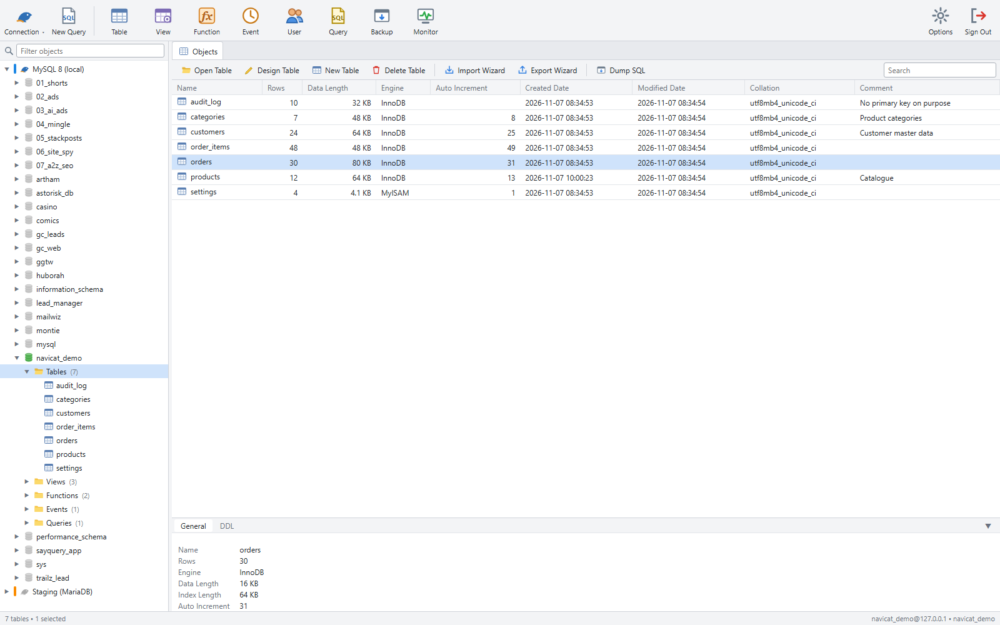
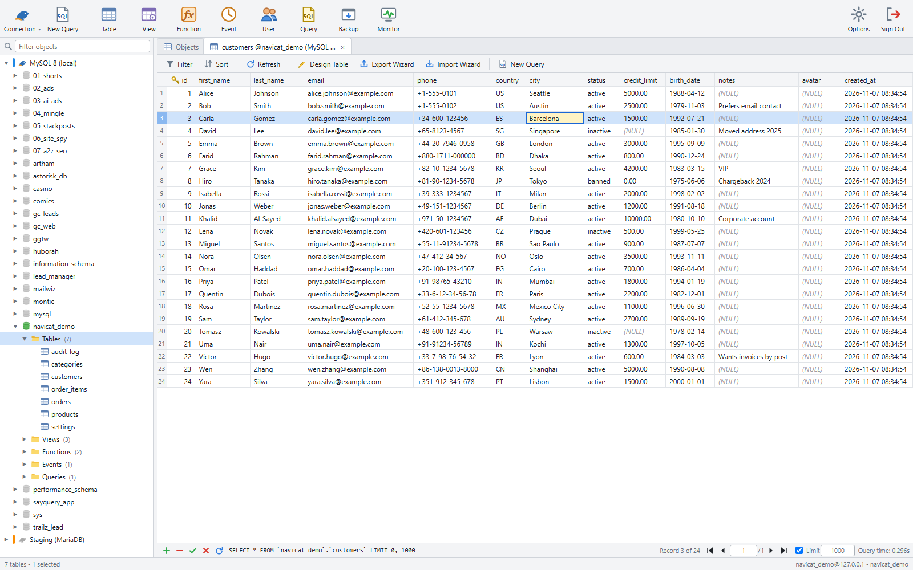
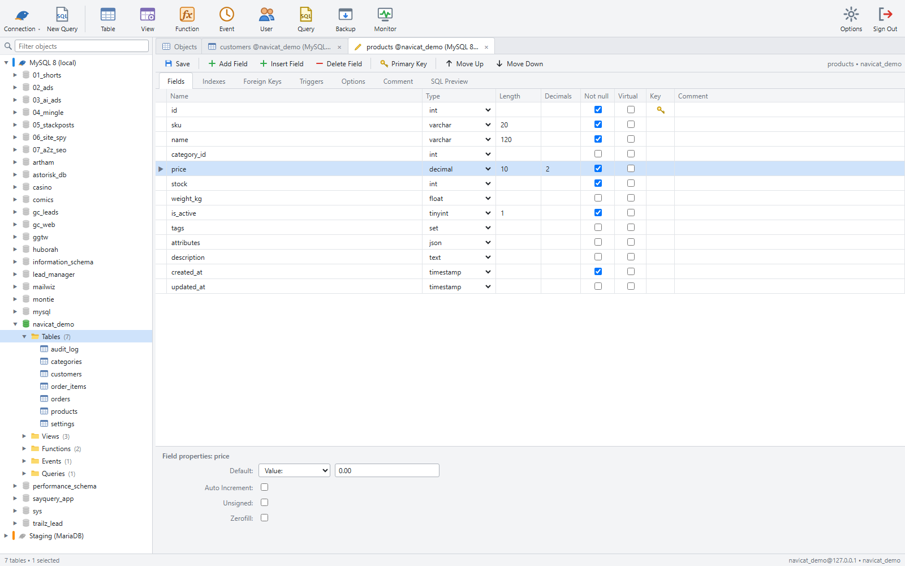
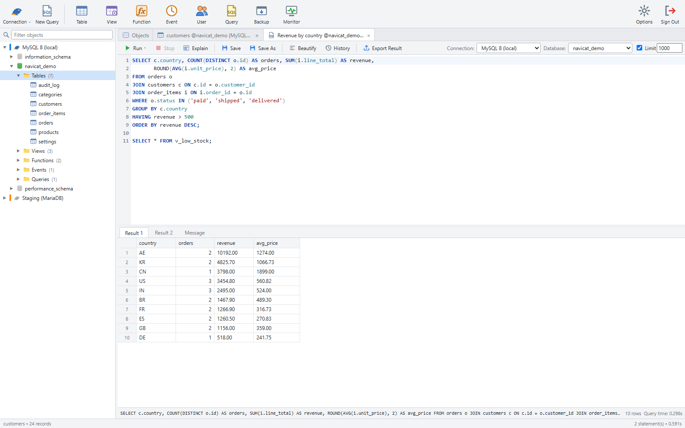
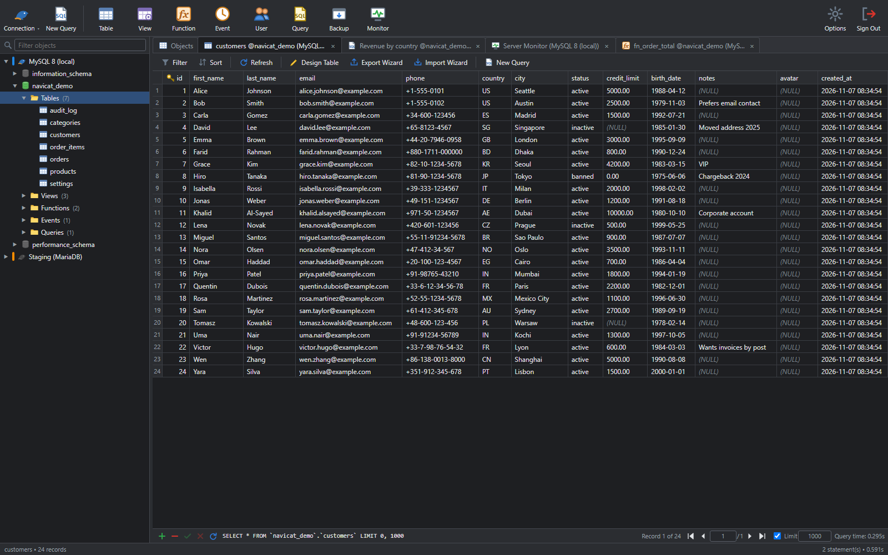
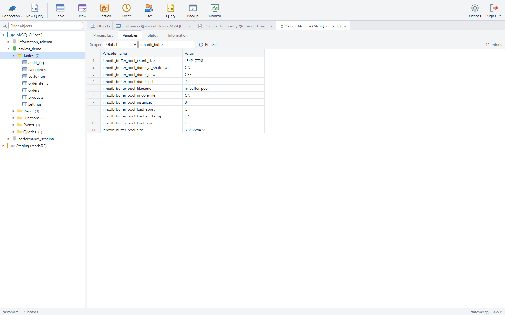
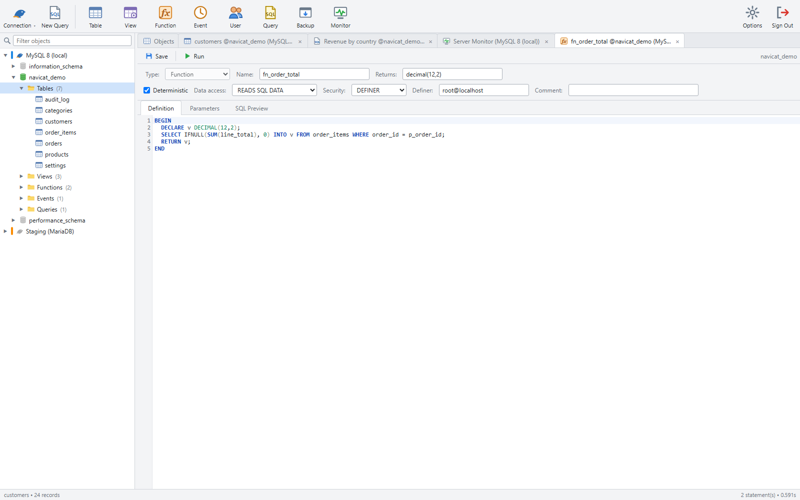

Navicat's layout and workflows for MySQL and MariaDB, in a browser tab.
A connection tree, an Objects list with its own toolbar, tabbed documents for table data, table design and queries, a record navigator under every grid, and the usual dialogs. Plain PHP, no framework, no build step: copy the folder to any PHP host and sign in.

navicat_demo with rows, size, engine and dates, and the information pane underneath.Everything a day in Navicat needs.
The same places, the same names and the same workflows — someone who lives in Navicat for MySQL is productive here at once.
▦Table data
Paged grid with row numbers, resizable columns, server-side sort, a Filter bar and a Sort bar, in-place editing committed when you leave the record, add / duplicate / delete records, Set to NULL, Copy As, and a cell viewer for text, hex, images and JSON.
✎Table designer
Fields, Indexes, Foreign Keys, Triggers, Options and Comment tabs with the field-properties panel, plus an always-current SQL Preview. Saving generates CREATE TABLE or a minimal ALTER TABLE diff.
SQLQuery editor
Syntax highlighting and table / column autocompletion, Run, Run Selected and Run Current Statement, Stop, Explain, Beautify, History, saved queries, one Result tab per result set and a Navicat-style Message pane.
ƒViews, functions, events
Designers for views (algorithm, definer, security, check option), functions and procedures (parameters, returns, deterministic, data access, body, Run) and events (AT / EVERY schedules, status, preserve).
⇅Transfer
Dump SQL File with structure and / or data, triggers, views, routines and events; Execute SQL File for files of any size (chunked upload, DELIMITER support, progress); Import Wizard for CSV and JSON; Export Wizard to CSV, TXT, JSON, SQL, HTML, XML and Markdown.
●Server & users
Server Monitor with the process list (Kill), global and session variables (Set), status and server information; Manage Users with server and database privileges, resource limits, account lock and Show Grants.
🔒Self-hosted and private
One application password, encrypted connection passwords (AES-256-GCM), CSRF tokens on every request, sign-in throttling, optional IP allow-list, and a data folder that is never served to the web.
⌨Keyboard first
Arrow keys, Enter / F2, Tab, Ctrl+C / Ctrl+V in the grid; Ctrl+R / Ctrl+Enter / F9 to run; Ctrl+S to save; F5 to refresh; Ctrl+0 for NULL; Ctrl+Space to complete names; Ctrl+Tab between documents.
It looks like Navicat because it follows Navicat.
Big-icon toolbar, navigation pane, Objects tab, document tabs and the status bar; dialogs with the same tabs and buttons.






Five minutes from download to your first query.
No composer, no npm, no database of its own. Any host that runs PHP 8 with mysqli will do — shared hosting included.
Get the code
# clone it, or download the ZIP and unpack it
git clone https://github.com/gextam/navicat-web.gitPut it on your web server
Copy the folder into the document root, for example public_html/mysql/, and make data/ writable by the web server. The folder is denied to visitors by data/.htaccess; on nginx deny it yourself or point NW_DATA_DIR in config.php outside the document root.
Open it and choose a password
The first visit asks for the application password. Click Connection, enter your MySQL host, port, user and password, press Test Connection, then OK — and double-click the connection in the navigation pane.
Just want to look?
# PHP's built-in server, from the project folder
php -S localhost:8080
# optional demo database with tables, views, routines, triggers and an event
mysql -u root -p < tests/demo_schema.sqlRequirements
| PHP | 8.0 or newer with mysqli, openssl and mbstring (all standard; fileinfo recommended). |
|---|---|
| Web server | Apache, nginx + php-fpm, IIS, or php -S. Tested on cPanel / Apache with PHP-FPM. |
| Database | MySQL 5.7 / 8.x or MariaDB 10.x, reachable from the web server (TCP or a Unix socket path in the Host field). |
| Browser | Any current Chrome, Edge, Firefox or Safari. |
Known limitations
Honest notes on where this differs from the desktop application.
- MySQL and MariaDB only — no PostgreSQL, SQLite, Oracle or SQL Server.
- No SSH or HTTP tunnelling: the web server itself must reach the database. SSL connections are supported.
- Query results are read-only; edit data in the table's own tab. Views are read-only too.
- No Query Builder, Data Modeler, Data Synchronisation, Structure Synchronisation, scheduled jobs or charts.
- Import Wizard reads CSV / TXT and JSON (no Excel, XML or Access); Export Wizard writes CSV, TXT, JSON, SQL, HTML, XML and Markdown.
- Manage Users needs an account that can read
mysql.user(usually root), and MySQL 8 only lets accounts withSYSTEM_USERalter objects whose definer is root. - Everyone who knows the application password can run whatever SQL the saved MySQL accounts allow — use a strong password, HTTPS and least-privilege accounts.